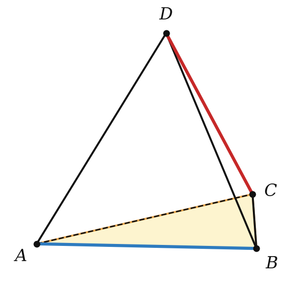
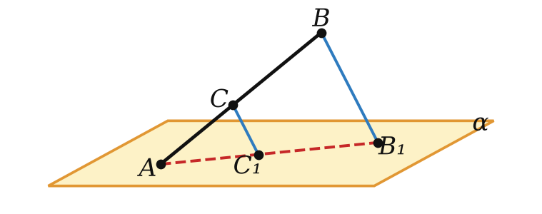

Теория
Почему «не пересекаются» — это ещё не «параллельны»
В планиметрии было просто: две прямые либо пересекаются, либо параллельны (не имеют общих точек). В пространстве появляется третий случай. Посмотри на куб: прямые AB и DC не пересекаются и лежат в одной плоскости — плоскости нижней грани. Прямые AA₁ и DC тоже не пересекаются, но через них нельзя провести плоскость: одна «стоит», другая «лежит» в стороне.

Две прямые в пространстве называют параллельными, если они лежат в одной плоскости и не пересекаются. Обозначение: a ∥ b.
Две прямые называют скрещивающимися, если они не лежат в одной плоскости.
Итак, у двух прямых в пространстве ровно три варианта:
| лежат в одной плоскости? | общие точки | |
|---|---|---|
| пересекаются | да | одна |
| параллельны | да | нет |
| скрещиваются | нет | нет |
Модели скрещивающихся прямых — провода линии электропередачи и дорога под ними, ребро потолка и ребро пола на соседних стенах, две балки строительных конструкций. Параллельных — колонны здания, брёвна сруба.
Два отрезка называют параллельными (скрещивающимися), если они лежат на параллельных (скрещивающихся) прямых. Например, в призме ABCA₁B₁C₁ рёбра AA₁ и BB₁ параллельны, а AC и BB₁ — скрещиваются.
Определение параллельности в пространстве состоит из двух условий: «в одной плоскости» и «нет общих точек». Если забыть первое, скрещивающиеся прямые по ошибке окажутся «параллельными».
Свойства параллельных прямых
Через две параллельные прямые проходит плоскость, и притом только одна.
Плоскость, проходящая через параллельные прямые a и b, существует — это прямо записано в определении. Если бы таких плоскостей было две, то обе проходили бы через прямую a и какую-нибудь точку прямой b (она не лежит на a). Это противоречит теореме 2.1. ∎
Получился четвёртый способ задать плоскость: двумя параллельными прямыми.
Через точку пространства, не лежащую на данной прямой, проходит прямая, параллельная данной, и притом только одна.
Пусть даны прямая a и точка A ∉ a. По теореме 2.1 через них проходит единственная плоскость α.
Существование. В плоскости α работает планиметрия (А2): через A можно провести прямую b ∥ a.
Единственность. В самой плоскости α такая прямая одна (аксиома параллельных). Но вдруг есть прямая b₁ ∥ a через A, которая не лежит в α? Параллельные прямые b₁ и a задают плоскость (теорема 4.1). Она проходит через a и A, значит, совпадает с α (теорема 2.1). Тогда b₁ лежит в α — противоречие. ∎
Как доказать, что прямые скрещиваются
Параллельность прямых в одной плоскости проверяют признаками из планиметрии. А для скрещивающихся нужен свой признак.
Если одна из двух прямых лежит в плоскости, а другая пересекает эту плоскость в точке, не принадлежащей первой прямой, то данные прямые скрещивающиеся.

Пусть a ⊂ α, прямая b пересекает α в точке M ∉ a. Допустим, прямые a и b лежат в некоторой плоскости β. Тогда β проходит через прямую a и точку M — как и α. По теореме 2.1 β = α. Значит, b ⊂ α, а по условию у b с α только одна общая точка. Противоречие: прямые скрещиваются. ∎
Как пользоваться: найди плоскость, в которой лежит одна прямая, и точку, где её «протыкает» другая. Например, в тетраэдре DABC прямая AB лежит в плоскости ABC, а прямая DC пересекает эту плоскость в точке C, которая не лежит на AB. Значит, AB и DC скрещиваются.

Два полезных факта
Если одна из двух параллельных прямых пересекает плоскость, то и другая прямая пересекает эту плоскость.
Пусть a ∥ b, a ∩ α = M. Через a и b проходит плоскость β (теорема 4.1). Плоскости α и β имеют общую точку M, значит, пересекаются по прямой c, проходящей через M. В плоскости β прямая c пересекает a, значит (планиметрия), пересекает и параллельную ей b — в точке N. Итак, у b и α есть общая точка N. Лежать в α прямая b не может: тогда по признаку 4.3 прямые a и b скрещивались бы. ∎
Все прямые, параллельные данной прямой a и пересекающие данную прямую m, лежат в одной плоскости — в плоскости прямых a и m.
Идея: если бы такая прямая b вышла из плоскости (a, m), то по признаку 4.3 она скрещивалась бы с a. Этот факт мы сейчас применим к вычислениям.
Разбор примеров
Сколько рёбер куба ABCDA₁B₁C₁D₁ параллельны прямой AA₁, сколько её пересекают и сколько скрещиваются с ней?
Параллельны: BB₁, CC₁, DD₁ — 3 (боковые грани — квадраты). Пересекают (в точках A и A₁): AB, AD, A₁B₁, A₁D₁ — 4. Остальные 4 ребра — BC, CD, B₁C₁, C₁D₁ — скрещиваются. Проверим одно по признаку: BC ⊂ (ABC), AA₁ пересекает (ABC) в точке A ∉ BC. Всего 3 + 4 + 4 = 11 — все рёбра, кроме самого AA₁.

Конец A отрезка AB лежит в плоскости α, точка C на AB, AC : CB = 2 : 3. Через B и C проведены параллельные прямые, пересекающие α в точках B₁ и C₁, BB₁ = 15. Найдите CC₁.
1) Прямые BB₁ и CC₁ параллельны и пересекают прямую AB, по ключевой задаче 2 они лежат в одной плоскости β вместе с AB.
2) Точки A, C₁, B₁ лежат и в α, и в β — значит, на прямой их пересечения (А5). Всё свелось к планиметрии в плоскости β.
3) CC₁ ∥ BB₁, поэтому △ACC₁ ∼ △ABB₁: CC₁ : BB₁ = AC : AB = 2 : 5. CC₁ = 15 · 2/5 = 6.

Отрезок AB не пересекает плоскость α, C — его середина. Через A, B, C проведены параллельные прямые, пересекающие α в точках A₁, B₁, C₁; AA₁ = 7, BB₁ = 13. Найдите CC₁.
Как и в примере 2, все прямые лежат в одной плоскости, а A₁, C₁, B₁ — на одной прямой. Четырёхугольник AA₁B₁B — трапеция (AA₁ ∥ BB₁), а CC₁ ∥ основаниям проходит через середину боковой стороны — это средняя линия. CC₁ = (7 + 13) : 2 = 10.
Если отрезок AB пересекает плоскость (точки A и B по разные стороны), трапеции нет. Тогда CC₁ равен полуразности: при AA₁ = 13, BB₁ = 7 и середине C получаем CC₁ = (13 − 7) : 2 = 3. Всегда делай рисунок и смотри, где лежат точки.
Задачи урока
Реши в тетради, к каждой задаче — чертёж. Разберём на занятии.
Тест к уроку
Домашнее задание
Задачи Д1–Д6 ниже, к каждой — рисунок. Из учебника: № 4.1, 4.4, 4.14, 4.23. Выучить определения параллельных и скрещивающихся прямых, теоремы 4.1–4.3; доказательство признака 4.3 — рассказать устно.